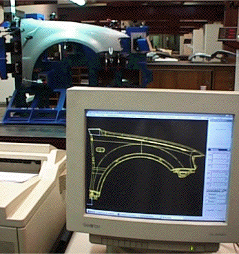

|
This workshop will feature interactions between geometric modeling and real algebraic geometry at the Mathematical Sciences Research Institute in Berkeley the weekend of April 3 and 4, 2004. It is embedded within the larger program on Real Algebraic Geometry during a period of activity on applications of real algebraic geometry. We expect about half of the participants for this workshop to be drawn from the MSRI community and local Universities, while the rest will be experts from elsewhere in the United States and Europe. Geometric modeling and algebraic geometry both study curves and surfaces generated by polynomials, but for very different purposes. In algebraic geometry these objects are studied for their theoretical interest, while geometric modeling uses them to build computer models for industrial design and manufacture. The curves and surfaces in geometric modeling are in fact objects of real algebraic geometry. Interactions between these fields have been increasing in recent years, but there has not yet been a meeting on these interactions in the US, nor one focused on real algebraic geometry. This workshop will bring together researchers from both fields and will be important for the evolution of these scientific links in US. Organizers |
 |